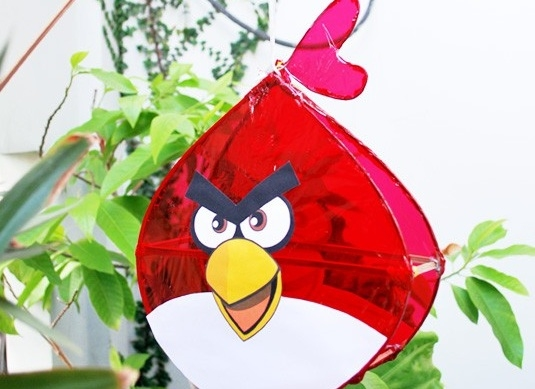
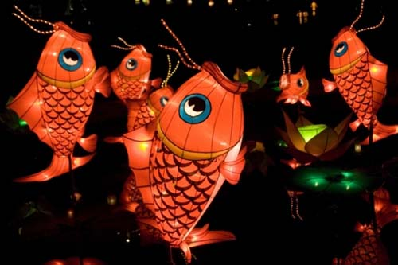
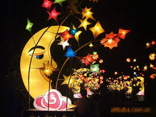

 Ngày xưa, ở dọc theo một bờ sông nọ, có một ngôi làng dân cư đông đúc, phồn thịnh. Bỗng nhiên, ở dưới sông có một con cá chép thành tinh xuất hiện. Con cá này thường lên bờ vào đêm trăng tròn tháng tám tìm bắt người ta để ăn thịt. Dân cư trong làng tìm cách trốn tránh hoặc chống cự, nhưng năm nào cũng vậy, cứ đến rằm tháng tám là có rất nhiều người bị con cá chép thành tinh sát hại. Nhiều người phải bỏ làng mà đi. Làng xóm vì vậy mà trở nên thê thảm, tiêu điều.
 Một hôm có nhà sư vân du qua đó, nghe dân làng trình bày thảm họa mà họ đang gánh chịu, ông mới bày cho dân làng làm mỗi nhà một cái lồng đèn hình con cá chép thật lớn, bên trong là nan tre, bên ngoài phủ vải. Đến rằm trung thu, dân làng đem lồng đèn treo trước cửa, trong lồng đèn có thắp đèn sáp lớn. Khi cá chép thành tinh lên bờ tìm người để ăn thịt, đi đến nhà nào nó cũng thấy lồng đèn cá chép, tưởng là nhà của đồng loại nên bỏ đi.
 Từ đó, mỗi năm cứ đến rằm trung thu, dân làng lại làm lồng đèn cá chép. Tục này ngày càng lan rộng ra khắp nơi, trở thành một thú vui trong ngày Trung Thu. Theo thời gian, lồng đèn cá chép được những tay thợ đầy sáng kiến chế biến thành những kiểu lồng đèn khác như cá hóa long, con thỏ, con rồng, v.v… Theo đà văn minh của nhân loại, lồng đèn được mang hình thức xe tăng, máy bay, tàu thủy, xe hơi, v.v…